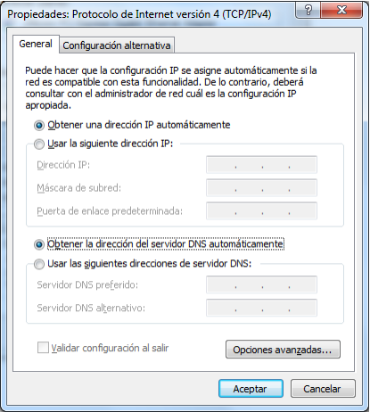
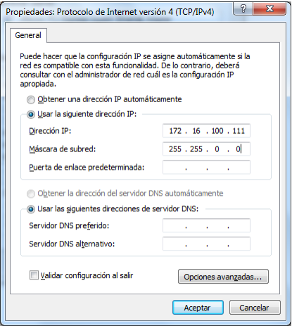
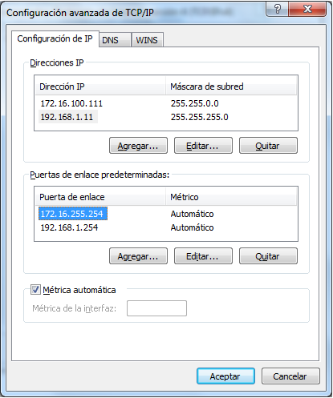
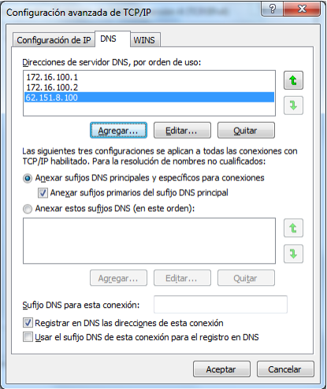
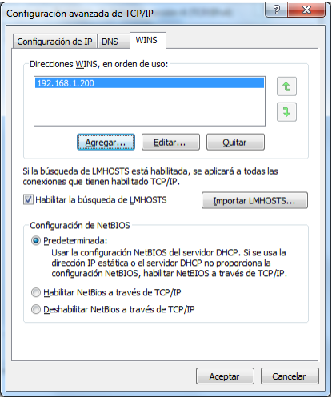
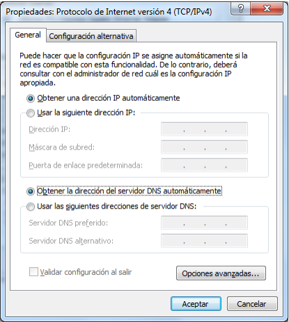
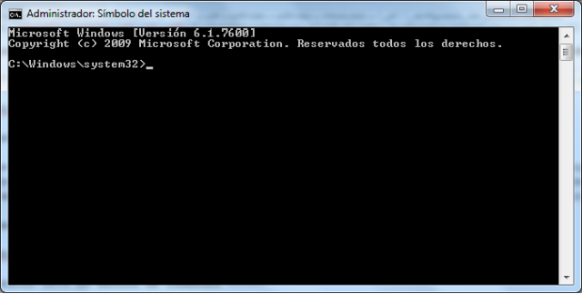

Tot host que es vulgui comunicar amb d’altres hosts d’altres xarxes necessita tenir configurada una adreça de xarxa. En aquesta pràctica aprendreu a fer correctament la configuració IP en el Windows 7.
En aquest punt aprendreu a realitzar la configuració de l’adreçament IP de forma estàtica i dinàmica fent ús de l’entorn gràfic del Windows 7.
Per configurar l’adreça IPv4 en el Windows 7 us heu d’adreçar a Inici > Tauler de control > Xarxes i Internet > Centre de xarxes i recursos compartits. Un cop aquí, escolliu l’opció Canviar configuració de l’adaptador, en el menú esquerre.
Escollint aquesta opció, podreu veure totes les connexions de xarxa que teniu instal·lades en l’equip. En aquest cas configurarem la targeta de xarxa cablejada, però els passos descrits a continuació es poden aplicar igualment en les targetes de xarxa sense fil.
Feu doble clic sobre Connexió d’àrea local, per editar-ne la configuració. Veureu una finestra com la que es mostra a continuació:
Feu doble clic sobre Protocol d’Internet versió 4 (TCP/IPv4), o seleccioneu-lo i feu clic a Propietats. Veureu una finestra com la que es mostra a continuació:

En aquesta finestra és on heu d’introduir la configuració IP que tindrà l’equip. Aquesta configuració variarà segons la xarxa en què ens trobem, per tant, farem la suposició següent:
En aquest cas, escollirem una adreça IP que encara no estigui assignada a cap host en la nostra xarxa. Per exemple:
Adreça IP: 172.16.100.111 /16
La configuració fins a aquest punt quedarà de la manera següent:

Per configurar correctament la porta d’enllaç, haurem de saber quina és l’adreça IP de la interfície interna del nostre encaminador (router). En aquest cas, suposarem que aquesta adreça és:
Adreça IP de la passarel·la (gateway): 172.16.255.254
Finalment, configurarem les adreces IP dels DNS que ens han donat. En aquest cas, les adreces IP que ens han donat són dues internes de la nostra xarxa (adreces privades: 172.16.100.1 i 172.16.100.2) i una d’externa (adreça pública: 62.151.8.100). El primer servidor DNS configurat serà el servidor DNS principal, i la resta, els servidors alternatius. Per defecte, el nostre sistema utilitzarà el servidor principal i únicament n’utilitzarà algun d’alternatiu en cas de que el principal no respongui. Entre els servidors alternatius s’utilitza el mateix procés segons com siguin ordenats.
Fins a aquest punt, la configuració quedaria d’aquesta manera:
Com podeu observar, fins ara només hem pogut configurar dos dels tres DNS que ens han donat: el servidor DNS principal (172.16.100.1) i el primer dels alternatius (172.16.100.2). En els propers punts aprendreu a configurar més servidors DNS alternatius en el Windows 7.
Si feu clic en el botó d’opcions avançades de les propietats de TCP/IPv4, us apareixerà una finestra com la que veieu a continuació:
Adreça IP. Aquí es poden assignar diferents adreces IP a la mateixa interfície de xarxa. D’aquesta manera, el vostre equip tindrà l’opció de comunicar-se en diferents xarxes sense haver de reconfigurar cada vegada l’adreça IP.
Per afegir una nova adreça IP, feu clic a Agregar i introduïu una nova adreça IP amb la màscara corresponent.
Portes d’enllaç predeterminades. De la mateixa manera que podem tenir assignades adreces IP de diferents xarxes, també és possible configurar les portes d’enllaç de xarxes diferents. Per agregar una nova porta d’enllaç feu clic a Agregar, i afegiu l’adreça IP de la porta d’enllaç alternativa. En aquest cas, la segona porta d’enllaç configurada únicament s’ha d’utilitzar si la primera no respon, per exemple, si l’encaminador en qüestió està apagat o desconnectat.
La configuració següent mostra l’estat d’aquesta pestanya amb dues adreces IP i dues portes d’enllaç configurades:

En la segona pestanya de les propietats avançades de TCP/IP, es poden configurar diferents aspectes relacionats amb els DNS.
Adreces de servidor DNS, per ordre d’ús. En aquest punt podreu assignar tantes adreces de DNS com siguin necessàries. Per fer-ho, feu clic a Agregar i afegiu l’adreça IP del servidor DNS. En aquest cas, afegirem l’adreça que hem deixat per configurar en els apartats anteriors.
En aquest punt, tenim tres adreces DNS configurades en el nostre equip. El sistema sempre utilitzarà la primera llevat que falli (no respongui). Si la primera no respon, i únicament si no ho fa, utilitzarà la segona adreça. Únicament en el cas en què aquesta tampoc respongués, agafaríem la darrera adreça IP que acabem de configurar:

Les altres opcions d’aquesta pestanya permeten agregar sufixos DNS utilitzats en la resolució de noms i no s’explicaran en aquest curs.
En la darrera pestanya podeu configurar els servidors WINS que utilitzarà el vostre equip. Un servidor WINS funciona de manera semblant a un servidor DNS i permet resoldre, en xarxes Windows, noms de host en les adreces IP corresponents.
Adreces WINS, en ordre d’ús. En aquesta part podeu afegir els servidors WINS de la vostra xarxa. Per afegir-ne de nous heu de fer clic a Agregar, i configurar la seva adreça IP.
Aquesta pestanya quedaria configurada de la manera següent:

Per obtenir una adreça IP utilitzant un servidor DHCP configurat en la nostra xarxa us heu d’adreçar a Configuració d’àrea local > Protocol d’Internet versió 4 (TCP/IPv4). En aquesta finestra heu d’escollir les opcions Obtenir una adreça IP automàticament i Obtenir l’adreça del servidor DNS automàticament. Finalment feu clic a Acceptar, i l’adreça IP s’assignarà automàticament. Aquesta adreça IP serà assignada pel servidor DHCP configurat. En cas de tenir més d’un servidor DHCP, l’adreça IP obtinguda serà la del primer servidor que respongui a la nostra petició.
La finestra haurà de quedar d’aquesta manera:

Les adreces IP assignades per un servidor DHCP no seran visibles des d’aquesta finestra, i s’haurà d’utilitzar l’ordre ipconfig (explicada més endavant) per comprovar la configuració de l’adreçament IP dinàmic.
En aquesta part de la pràctica utilitzareu les ordres disponibles en el Windows 7 per comprovar i configurar l’adreça IP del sistema. Per accedir a l’entorn d’ordres amb permisos administratius adreceu-vos a Inici > Tots els programes > Accessoris, feu clic amb el botó dret del ratolí sobre Símbol del sistema, i escolliu l’opció Executar com a administrador.
D’aquesta manera, obtindreu l’accés a l’indicador d’ordres (command prompt):

Per comprovar l’adreça IP assignada al vostre sistema amb l’entorn d’ordres utilitzarem l’ordre ipconfig.
ipconfig: Internet Protocol Configuration és una utilitat que mostra la configuració TCP/IP actuals i permet actualitzar la configuració IP dinàmica.
Introduïu l’ordre ipconfig i comproveu-ne el resultat. Veureu un resultat semblant al següent (tingueu en compte que tant el nom de les interfícies com les adreces IP poden ser diferents dels que es mostren.):
Introduïu l’ordre ipconfig /? per mostrar totes les opcions disponibles.
Proveu les ordres següents i observeu el resultat obtingut.
ipconfig /all mostra la informació detallada de la configuració IP de cada interfície. Aquesta informació conté, entre d’altres coses, l’adreça de la porta d’enllaç, adreça física (MAC), servidors DNS configurats, etc:
ipconfig /release permet alliberar una adreça IP obtinguda pel DHCP. Únicament tindrà resultat si la interfície de xarxa està configurada per rebre la seva configuració IP de manera dinàmica:
ipconfig /renew permet renovar l’adreça IP. Si el host que executa aquesta ordre té una adreça IP assignada pel DHCP, aquesta serà alliberada (release) i, posteriorment, es demanarà una nova concessió al servidor DHCP. Si el host no té cap adreça IP assignada, demanarà una adreça IP al servidor DHCP configurat en la xarxa. Perquè aquesta ordre tingui èxit, la targeta de xarxa ha d’estar configurada per poder obtenir la seva configuració IP de manera dinàmica:
Tot seguit es detallen les passes necessàries que heu de seguir per realitzar la configuració de xarxa fent ús de l’entorn de comandes del Windows 7.
Per fer la configuració TCP/IP des de l’indicador d’ordres, utilitzarem l’ordre netsh.
netsh: utilitat del Windows en línia d’ordres que utilitza la seqüència d’ordres i permet la configuració de xarxa en equips locals i remots.
Introduïu l’ordre:
netsh /?
Podreu veure totes les subordres que admet netsh.
Per configurar una adreça IP en una interfície heu d’introduir les ordres següents:
netsh interface ip set address “nom_interfície” static Adreça_IP Màscara Porta_d_enllaç
En què:
Amb interfície ens referim al nom
que hem assignat des del tauler de
control a la nostra interfície de
xarxa.
nom_interfície és el nom que té la interfície a configurar, per exemple, Connexió d’àrea local.
Adreça_IP és l’adreça IP que voleu assignar a la interfície.
Màscara és la màscara de xarxa per a l’adreça IP introduïda.
Porta_d_enllaç és l’adreça IP de la porta d’enllaç o gateway predeterminat.
Per exemple:
netsh interface ip set address “ethernet” static 192.168.1.102 255.255.255.0 192.168.1.254
En aquest cas, a la interfície anomenada Ethernet hem afegit la configuració estàtica següent:
Per configurar el servidor DNS principal del sistema, heu d’introduir l’ordre següent:
netsh interface ip set dns “nom_interfície” static Adreça_IP
En què:
Per exemple:
netsh interface ip set dns “ethernet” static 62.151.8.100
En aquest exemple, a la interfície de l’equip anomenada Ethernet hem assignat l’adreça IP del servidor 62.151.8.100 com a servidor DNS principal.
Per configurar més d’un servidor DNS, l’ordre necessària és lleugerament diferent de la que s’ha mostrat anteriorment, ja que els servidors de noms següents s’han d’afegir.
La sintaxi utilitzada hauria de ser com la que es mostra a continuació:
netsh interface ip add dns “nom_interfície” Adreça_IP
En què:
Per exemple:
netsh interface ip add dns “ethernet” 62.151.2.8
En aquest cas, hem afegit com a servidor de noms alternatiu l’adreça IP 62.151.2.8. Recordeu que, en aquest cas, aquest servidor només s’utilitzarà si el principal (62.151.8.100) no respon a les nostres sol·licituds.
Per tant, si el que volem és configurar completament una interfície de xarxa en el Windows 7, n’hi haurà prou a introduir les línies següents:
netsh interface ip set address "ethernet" static 192.168.1.102 255.255.255.0 192.168.1.254
netsh interface ip set dns "ethernet" static 62.151.8.100
netsh interface ip add dns "ethernet" 62.151.2.8
De la mateixa manera que heu configurat les vostres interfícies de xarxa de manera estàtica, també teniu l’opció de configurar-les de manera dinàmica mitjançant l’entorn d’ordres amb l’ordre netsh. En aquest cas, la configuració serà molt mes senzilla, ja que només s’ha d’informar el sistema del fet que la configuració IP s’obtindrà automàticament mitjançant un servidor DHCP.
Per configurar la vostra adreça IP, màscara de xarxa i porta d’enllaç de manera dinàmica heu d’utilitzar l’ordre següent:
netsh interface ip set address “nom_interfície” dhcp
En què:
Per exemple:
netsh interface ip set address “ethernet” dhcp
Per configurar els servidors DNS de manera dinàmica i obtenir-ne les adreces automàticament heu d’introduir l’ordre següent:
netsh interface ip set dns “nom_interfície” dhcp
En què:
Per exemple:
netsh interface ip set dns “ethernet” dhcp
D’aquesta manera, les adreces dels servidors DNS principal i alternatius (si n’hi ha) s’ssignaran mitjançant un servidor DHCP.
Moltes vegades, la configuració necessària per connectar-nos a diferents xarxes és ben diferent. La configuració IP de casa, la de la feina o la de les biblioteques poden fer que, cada cop que us vulgueu connectar a una xarxa diferent hàgiu de reconfigurar l’adreçament IP per poder accedir a la xarxa o a Internet. En aquests casos és molt útil utilitzar un script d’autoconfiguració que, tot i que de vegades és complex de configurar-lo correctament, us pot facilitar molt la connexió i l’intercanvi d’una xarxa per una altra.
En aquest punt aprendreu a configurar un script senzill que modificarà automàticament la vostra adreça IP depenent de la xarxa en què us trobeu. Aquest és un script bàsic, però el podreu ampliar, modificar i adaptar a les vostres necessitats.
Obriu dos blocs de notes i deseu-los en l’escriptori amb el nom Configuració Casa.bat l’un, i Configuració IES.bat l’altre. Fixeu-vos que l’extensió assignada no serà txt sinó bat.
En aquest exemple concret es pressuposen els dos casos següents:
- La xarxa domèstica té la configuració següent:
- Xarxa cablejada i xarxa sense fil amb la mateixa configuració.
- La interfície de la xarxa cablejada té el nom assignat ethernet i la interfície sense fil serà wifi.
- Adreça de xarxa: 192.168.1.0 /24
- Porta d’enllaç: 192.168.1.254
- Adreces DNS: 8.8.8.8, 62.151.2.8
- La xarxa de l’institut assigna adreces IP de manera dinàmica tant per a la xarxa cablejada com per a la xarxa sense fil.
Afegiu les línies següents al fitxer Configuració Casa.bat, i adapteu-lo a les vostres necessitats:
netsh interface ip set address "wifi" static 192.168.1.101 255.255.255.0 192.168.1.254
netsh interface ip set dns "wifi" static 8.8.8.8
netsh interface ip add dns "wifi" 62.151.2.8
netsh interface ip set address "ethernet" static 192.168.1.102 255.255.255.0 192.168.1.254
netsh interface ip set dns "ethernet" static 8.8.8.8
netsh interface ip add dns "ethernet" 62.151.2.8
Afegiu les línies següents al fitxer Configuració IES.bat, i adapteu-lo a les vostres necessitats:
netsh interface ip set address "wifi" dhcp
netsh interface ip set address "ethernet" dhcp
netsh interface ip set dns "wifi" dhcp
netsh interface ip set dns "ethernet" dhcp
Un cop desats els arxius bat, els podeu executar per fer la configuració IP automàtica. Fixeu-vos que, perquè funcioni correctament, els heu d’executar amb permisos administratius. Per fer això, heu de fer clic amb el botó dret sobre l’arxiu bat i seleccionar l’opció Executar com a administrador.
Per tant, cada cop que vulgueu modificar l’adreça IP del vostre equip, només heu d’escollir el bat que voleu executar per fer la configuració correcta.
Finalment, i únicament per comoditat, podríem afegir aquests dos blocs de configuració en un únic arxiu i afegir un menú senzill que ens permeti canviar d’una configuració a una altra sense complicacions. Com que no és l’objectiu d’aquesta unitat formativa, no s’explicaran amb detall tots els punts d’aquest script.
@echo off
echo "On ets, a Casa(1) o a l'institut (2)?"
choice /C:12 /N
if errorlevel == 2 goto IES
if errorlevel == 1 goto CASA
:IES
echo "Ets a l'institut"
echo "Activant Configuracio IP DHCP wifi"
netsh interface ip set address "wifi" dhcp
echo "Activant Configuracio IP DHCP ethernet"
netsh interface ip set address "ethernet" dhcp
echo "Configurant DNS"
netsh interface ip set dns "wifi" dhcp
netsh interface ip set dns "ethernet" dhcp
GOTO END
:CASA
echo "Ets a casa"
echo "Activant Configuracio IP estatica Wifi"
netsh interface ip set address "wifi" static 192.168.1.101 255.255.255.0 192.168.1.254
netsh interface ip set dns "wifi" static 8.8.8.8
netsh interface ip add dns "wifi" 62.151.2.8
echo "Activant Configuracio IP estatica ethernet"
netsh interface ip set address "ethernet" static 192.168.1.102 255.255.255.0 192.168.1.254
netsh interface ip set dns "ethernet" static 8.8.8.8
netsh interface ip add dns "ethernet" 62.151.2.8
GOTO END
:END
Aquest senzill script ens permet escollir entre dues configuracions diferents segons el lloc on siguem, en aquest cas, a casa o a l’institut. Prement el número 1, l’script ens fa la configuració estàtica (de casa). Prement el número 2, l’script fa la configuració dinàmica: